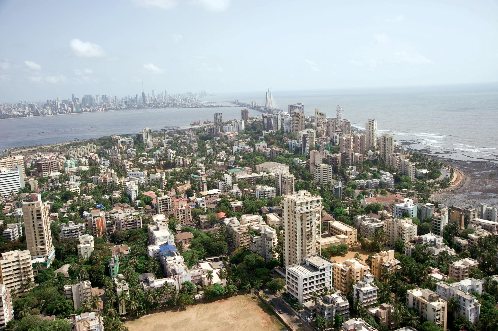
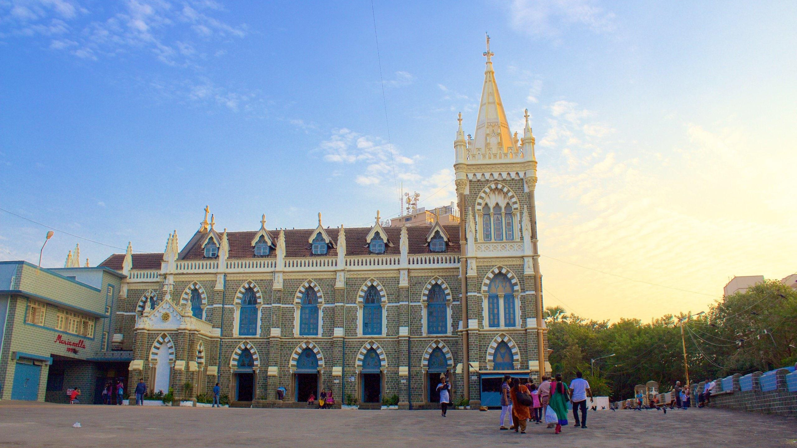
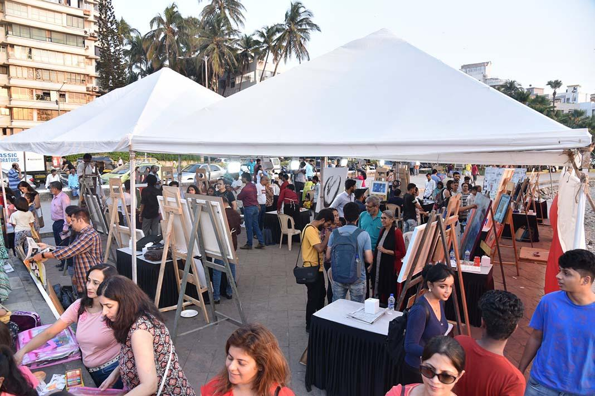
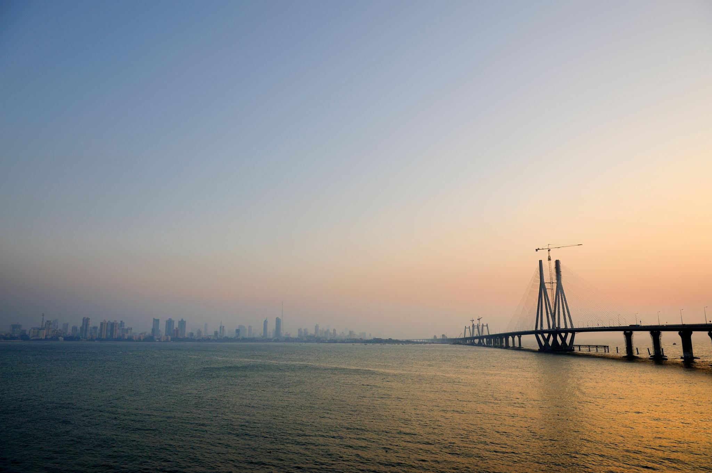
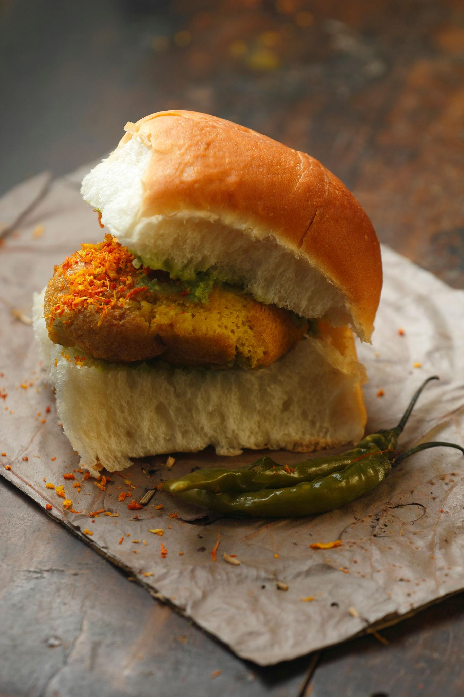
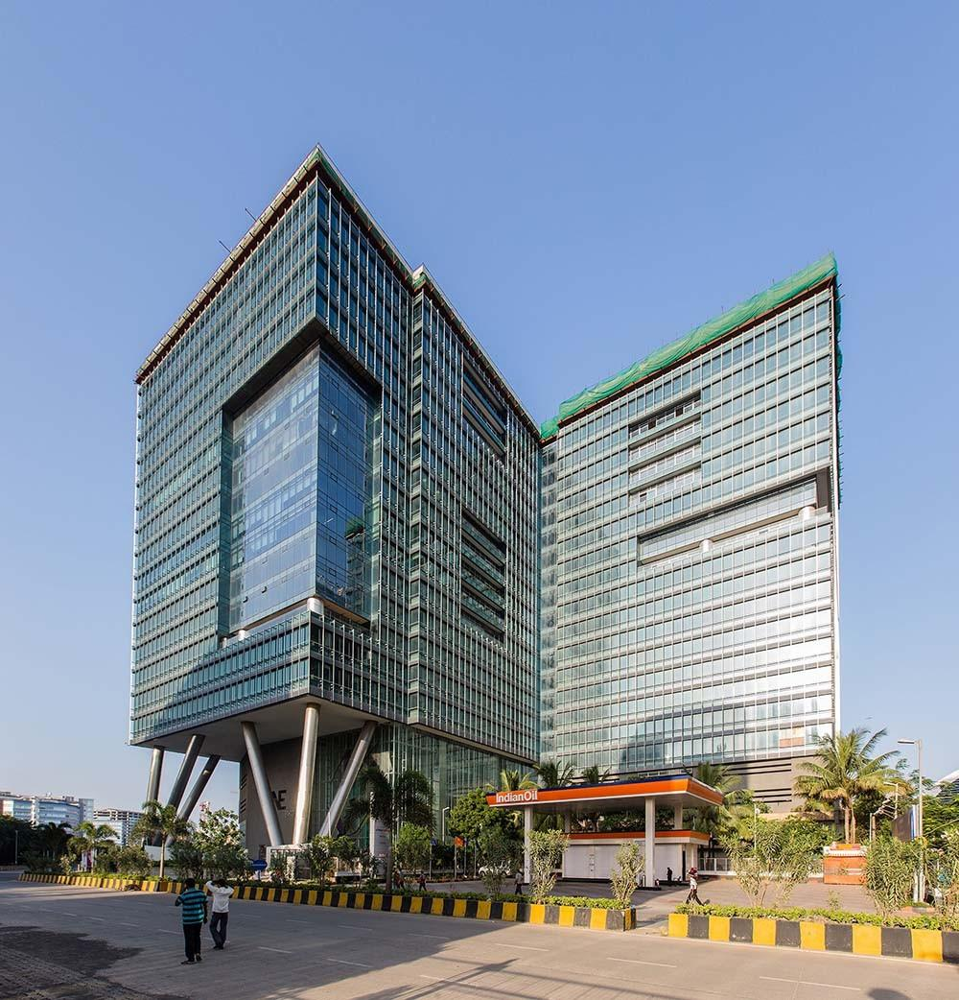
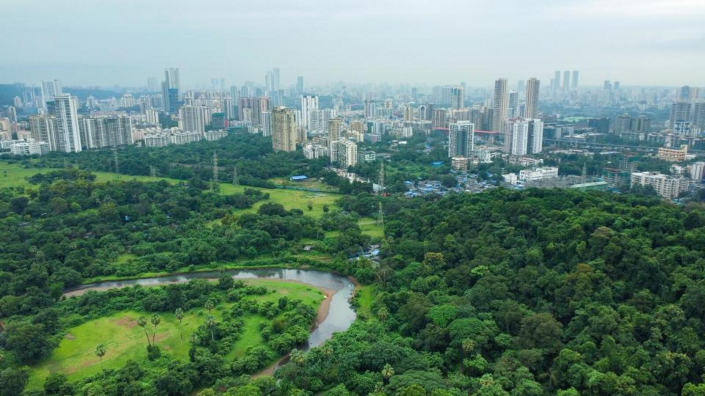
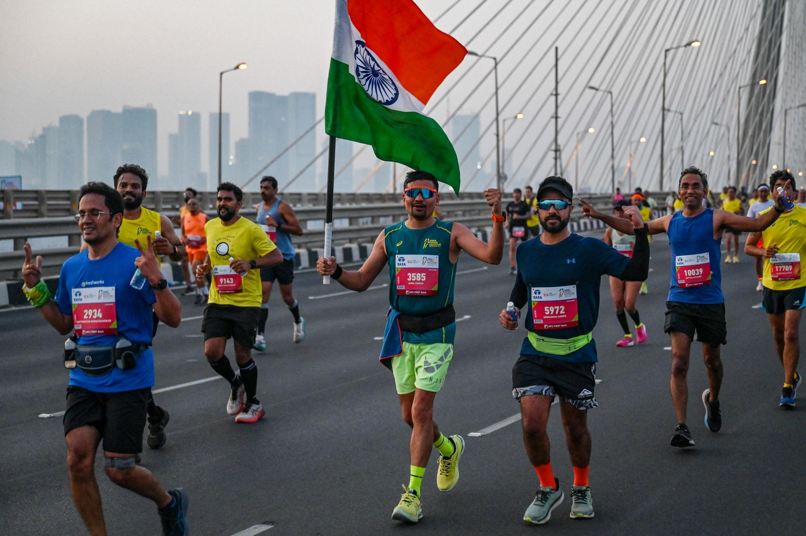

About

Mumbai Suburban is the second most populous district in the state of Maharashtra. It stretches from Bandra to Dahisar on the western side and Kurla to Mulund on the eastern side. The district headquarters is located in Bandra East, making it the administrative center. It is managed by the Municipal Corporation of Greater Mumbai alongside local collector offices. This district handles a massive flow of daily commuters moving between the suburbs and south Mumbai.
- Location:West Coast:It sits on India's west coast along the Arabian Sea, just north of the old city.Near Pune: The district is about 150 kilometers northwest of Pune city.Salsette Island:It covers most of Salsette Island, from Bandra up to Dahisar.
- Famous as:Bollywood Home: It is the true home of Bollywood, with massive movie studios in Film City.Business Hub: It holds the Bandra-Kurla Complex, India's top modern banking and finance center.Star Neighborhoods: It is famous for Bandra and Juhu, where India's biggest movie stars live.
History

The region was once a collection of separate islands separated by tidal marshes. The British merged these lands through the Hornby Vellard engineering project in the nineteenth century. Salsette Island forms the major geographical base for this entire suburban expansion. The area grew rapidly after the mid-twentieth century when the city center became too crowded. It officially split from the main Mumbai city district in October nineteen ninety.
- Stone Age Kolis: The land was first home to the indigenous Koli fishing community during the Stone Age.Early Empires: The region later thrived under powerful early empires like the Mauryas, Satavahanas, and Vakatakas.Later Rulers: The Silahara dynasty and Yadavas of Devagiri ruled the area before the Gujarat Sultanate took control.Colonial Shift: The Portuguese ruled the land until it went to the British Raj as a royal dowry in 1661.Ancient Caves: The district holds the historic rock-cut Buddhist Kanheri Caves deep inside the Borivali forests.
Culture

This area serves as the primary home for the Hindi and Marathi entertainment industries. The local lifestyle is fast, busy, and deeply tied to the daily train schedule. Traditional Koli fisherfolk still live in coastal villages next to modern high-rise apartments. Art festivals, music concerts, and theater shows happen every week in cultural hubs like Prithvi Theatre. The diverse population means that every major Indian festival is celebrated with public holidays and big street fairs.
- Main Festivals:While Ganesh Utsav is the grandest of them all, the district heavily celebrates Diwali, Navratri, Eid, and Christmas. To dive deeper into contemporary and historic arts, locals also flock to the renowned Kala Ghoda Arts Festival, held annually in South Mumbai
- Traditional Arts:The region is the nerve center of the global Bollywood film industry. It also maintains deep roots in traditional Maharashtrian culture through Koli folk dances and vibrant live Marathi Theatre.
- Language:While Marathi is the state's official language, the suburbs thrive on a melting-pot dialect known as Bambaiya Hindi—a colorful mix of Hindi, Marathi, and English slang that connects the local communities.
Tourism

The district contains the Global Vipassana Pagoda which features a massive meditation hall. Visitors can take ferry rides from Gorai to enjoy popular beach resorts and amusement parks. The Bandra Fort offers panoramic views of the Arabian Sea and the modern sea link bridge. Jogger’s Park and the Carter Road Promenade are popular waterfront spots for evening walks. The area also hosts several historic forts built by the Portuguese during the sixteenth century.
- Kanheri Caves: Over 100 ancient Buddhist rock-cut caves carved into a hillside.
- Bandra-Worli Sea Link: A modern, cable-stayed bridge spanning across the open ocean.
- Juhu Beach: A wide, bustling coastline famous for street food and sunset views.
Famous Food

The local culinary scene ranges from cheap street carts to elite fine dining options. Street vendors sell regional favorites like vada pav, bhurji pav, and frankies until late at night. The lanes of Khau Galli are famous for serving varieties of dosas, chaat, and local sweets. Seafood restaurants cook fresh catches using unique Malvani and Gomantak spice blends. Irani cafes still serve classic bun maska and chai to loyal customers in older neighborhoods.
- Famous dishes:Renowned for Vada Pav, Pav Bhaji, and crispy Bombay Duck fried fish.
- Local Specialty:Famous for crunchy Bhel Puri, suburban Frankies, and classic Bun Maska with cutting chai.
Economy

The Bandra-Kurla Complex has overtaken south Mumbai as the premier commercial business district. SEEPZ in Andheri serves as a major hub for software exports and jewelry manufacturing. The district generates massive revenue through real estate development and luxury housing projects. Retail markets like Linking Road and Hill Road attract shoppers from all over the state. Major international airlines operate their cargo and passenger flights out of the local airport terminals.
- Key Industries:Driven by corporate banking, the global Bollywood film industry, information technology hubs, and maritime trade.
- Main Crops:Dominated by local coastal fishing catches and suburban coconut groves, alongside regional mangoes, rice, and fresh vegetables.
Environment

The district features three major rivers named the Mithi, Oshiwara, and Dahisar rivers. Large patches of salt pans and mudflats line the eastern express highway border. The Aarey Milk Colony provides a crucial green buffer zone against heavy urban pollution. Heavy monsoon rains often cause waterlogging in the low-lying geographical zones of the district. Local citizen groups run weekly plantation drives to protect the remaining urban forest canopy.
- Climate:Experiences a tropical wet and dry climate with high humidity, warm temperatures, and extremely heavy monsoon rainfall from June to September.
- Key Rivers:Main lifelines include the Mithi, Oshiwara, Dahisar, and Poisar rivers, which flow through the suburbs and empty into the Arabian Sea.
- Protected Areas:Home to Sanjay Gandhi National Park, a massive urban forest that hosts a large population of leopards and the ancient Kanheri Caves.
Sports

The district features large sports complexes like the Andheri Sports Complex for national events. Local schools and colleges compete fiercely in Giles Shield and Harris Shield cricket tournaments. The Mumbai Suburban District Amateur Cycling Association organizes regular races on the highways. Many residential societies host annual sports meets for badminton, table tennis, and carrom. The coastal waters also host traditional boat racing events during the coconut festival.
- Traditional Sports:Heavily centered around Kushti (traditional wrestling) in historic neighborhood gyms, alongside fast-paced Kabaddi and Kho-Kho tournaments organized across local communities.
- Focus: Deeply rooted in cricket, field hockey, football, and marathon running, with athletic development heavily supported by local sports clubs, multi-sport complexes, and neighborhood grounds.